Differentiation¶
Numerical derivatives (diff, diffs)¶
- mpmath.calculus.diff(f, x, n=1, method='step', scale=1, direction=0)¶
Numerically computes the derivative of
 , 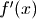. Optionally,
computes the
, 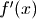. Optionally,
computes the  -th derivative, 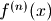, for any order .
-th derivative, 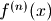, for any order .Basic examples
Derivatives of a simple function:
>>> from mpmath import * >>> mp.dps = 15; mp.pretty = True >>> diff(lambda x: x**2 + x, 1.0) 3.0 >>> diff(lambda x: x**2 + x, 1.0, 2) 2.0 >>> diff(lambda x: x**2 + x, 1.0, 3) 0.0
The exponential function is invariant under differentiation:
>>> nprint([diff(exp, 3, n) for n in range(5)]) [20.0855, 20.0855, 20.0855, 20.0855, 20.0855]
Method
One of two differentiation algorithms can be chosen with the method keyword argument. The two options are 'step', and 'quad'. The default method is 'step'.
'step':
The derivative is computed using a finite difference approximation, with a small step h. This requires n+1 function evaluations and must be performed at (n+1) times the target precison. Accordingly, f must support fast evaluation at high precision.
'quad':
The derivative is computed using complex numerical integration. This requires a larger number of function evaluations, but the advantage is that not much extra precision is required. For high order derivatives, this method may thus be faster if f is very expensive to evaluate at high precision.
With 'quad' the result is likely to have a small imaginary component even if the derivative is actually real:
>>> diff(sqrt, 1, method='quad') (0.5 - 9.44048454290863e-27j)
Scale
The scale option specifies the scale of variation of f. The step size in the finite difference is taken to be approximately eps*scale. Thus, for example if 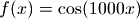, the scale should be set to 1/1000 and if 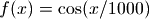, the scale should be 1000. By default, scale = 1.
(In practice, the default scale will work even for 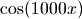 or 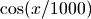. Changing this parameter is a good idea if the scale is something preposterous.)
If numerical integration is used, the radius of integration is taken to be equal to scale/2. Note that f must not have any singularities within the circle of radius scale/2 centered around x. If possible, a larger scale value is preferable because it typically makes the integration faster and more accurate.
Direction
By default, diff() uses a central difference approximation. This corresponds to direction=0. Alternatively, it can compute a left difference (direction=-1) or right difference (direction=1). This is useful for computing left- or right-sided derivatives of nonsmooth functions:
>>> diff(abs, 0, direction=0) 0.0 >>> diff(abs, 0, direction=1) 1.0 >>> diff(abs, 0, direction=-1) -1.0
More generally, if the direction is nonzero, a right difference is computed where the step size is multiplied by sign(direction). For example, with direction=+j, the derivative from the positive imaginary direction will be computed.
This option only makes sense with method=’step’. If integration is used, it is assumed that f is analytic, implying that the derivative is the same in all directions.
- mpmath.calculus.diffs(f, x, n=mpf('+inf'), method='step', scale=1, direction=0)¶
Returns a generator that yields the sequence of derivatives
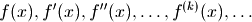
With method='step', diffs() uses only 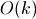 function evaluations to generate the first
 derivatives,
rather than the roughly 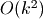 evaluations
required if one calls diff() separate times.
derivatives,
rather than the roughly 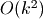 evaluations
required if one calls diff() separate times.With 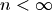, the generator stops as soon as the
-th derivative has been generated. If the exact number of
needed derivatives is known in advance, this is further
slightly more efficient.Examples
>>> from mpmath import * >>> mp.dps = 15 >>> nprint(list(diffs(cos, 1, 5))) [0.540302, -0.841471, -0.540302, 0.841471, 0.540302, -0.841471] >>> for i, d in zip(range(6), diffs(cos, 1)): print i, d ... 0 0.54030230586814 1 -0.841470984807897 2 -0.54030230586814 3 0.841470984807897 4 0.54030230586814 5 -0.841470984807897
Fractional derivatives / differintegration (differint)¶
- mpmath.calculus.differint(f, x, n=1, x0=0)¶
Calculates the Riemann-Liouville differintegral, or fractional derivative, defined by
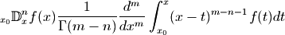
where
is a given (presumably well-behaved) function,
 is the evaluation point, is the order, and
is the evaluation point, is the order, and  is
the reference point of integration (
is
the reference point of integration ( is an arbitrary
parameter selected automatically).
is an arbitrary
parameter selected automatically).With
 , this is just the standard derivative ; with
, this is just the standard derivative ; with  ,
the second derivative 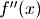, etc. With 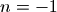, it gives
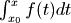, with 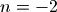
it gives 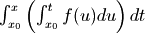, etc.
,
the second derivative 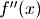, etc. With 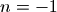, it gives
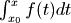, with 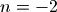
it gives 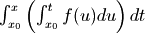, etc.As
is permitted to be any number, this operator generalizes
iterated differentiation and iterated integration to a single
operator with a continuous order parameter.Examples
There is an exact formula for the fractional derivative of a monomial 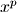, which may be used as a reference. For example, the following gives a half-derivative (order 0.5):
>>> from mpmath import * >>> mp.dps = 15; mp.pretty = True >>> x = mpf(3); p = 2; n = 0.5 >>> differint(lambda t: t**p, x, n) 7.81764019044672 >>> gamma(p+1)/gamma(p-n+1) * x**(p-n) 7.81764019044672
Another useful test function is the exponential function, whose integration / differentiation formula easy generalizes to arbitrary order. Here we first compute a third derivative, and then a triply nested integral. (The reference point
is set to  to avoid nonzero endpoint terms.):
to avoid nonzero endpoint terms.):>>> differint(lambda x: exp(pi*x), -1.5, 3) 0.278538406900792 >>> exp(pi*-1.5) * pi**3 0.278538406900792 >>> differint(lambda x: exp(pi*x), 3.5, -3, -inf) 1922.50563031149 >>> exp(pi*3.5) / pi**3 1922.50563031149
However, for noninteger
, the differentiation formula for the
exponential function must be modified to give the same result as the
Riemann-Liouville differintegral:>>> x = mpf(3.5) >>> c = pi >>> n = 1+2*j >>> differint(lambda x: exp(c*x), x, n) (-123295.005390743 + 140955.117867654j) >>> x**(-n) * exp(c)**x * (x*c)**n * gammainc(-n, 0, x*c) / gamma(-n) (-123295.005390743 + 140955.117867654j)